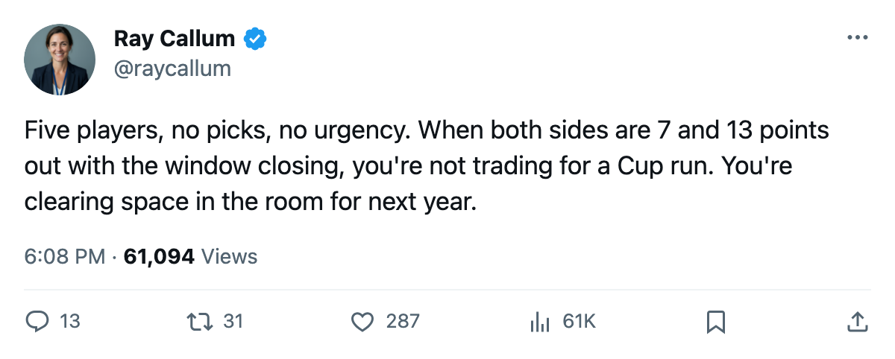

Roster Move Roundup: Philadelphia and San Jose Swap Five Players With Zero Picks Attached
Both clubs trail the eighth seat by at least 7 points, and 5 days remain before what the calendar has as the trade deadline
 Ray CallumSenior correspondent · Home Ice Network
Ray CallumSenior correspondent · Home Ice NetworkThe league confirmed a trade filed on March 10 between  San Jose Sharks and
San Jose Sharks and  Philadelphia Flyers. San Jose sends Stephane Matteau and Marco Sturm to Philadelphia for Claude Lapointe,
Philadelphia Flyers. San Jose sends Stephane Matteau and Marco Sturm to Philadelphia for Claude Lapointe,  Jeff Hackett84, and Eric Chouinard. Five players, zero picks.
Jeff Hackett84, and Eric Chouinard. Five players, zero picks.
Philadelphia trails 8th-place Atlanta by 7 points with 14 games remaining. San Jose sits 13 behind Phoenix with 13 to play. Neither club is mathematically eliminated, but both would need a full collapse from a team ahead of them to reach the postseason. Five days remain before the deadline, and today's deal moves bodies between two clubs chasing nothing.
What each side gets
Matteau carried an arm injury earlier in the season and appears once in the Philadelphia injury ledger. Sturm carries four injury spells, one of them an ankle, across 38 total spells and 208 days lost for the Flyers this year. Neither arrival fixes a club that has won 23 games in 68.
Hackett has appeared in 57 games this season, second on San Jose's workload sheet behind  Evgeni Nabokov90's 58. He joins a Philadelphia room whose goaltenders,
Evgeni Nabokov90's 58. He joins a Philadelphia room whose goaltenders,  Robert Esche77 and
Robert Esche77 and  Neil Little74, have split 20 games between them in 68 team appearances. The Sharks have lost 78 days across 43 injury spells, the fewest in the league. Lapointe and Chouinard add forward and defensive depth for a club already playing out the string.
Neil Little74, have split 20 games between them in 68 team appearances. The Sharks have lost 78 days across 43 injury spells, the fewest in the league. Lapointe and Chouinard add forward and defensive depth for a club already playing out the string.
The standings behind the deal
Philadelphia needs 7 more points than Atlanta over 14 games to close a gap it has trailed since early February. San Jose needs 13, with 13 games on the board against a Phoenix club that has won 31 of 69.
Both clubs have been sellers, not rebuilders. Payroll is committed to the present and will earn nothing in return come April. Five days remain for a third trade that changes something.
